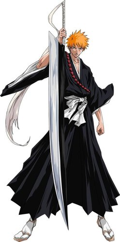

黑崎一护
日本动漫《死神》中的主人公
黑崎一护，日本动漫《死神》中的男主人公，是灭却师与死神结合生下的后代，体内拥有虚的力量， 在一次家人遭到虚的攻击时，为了救下家人，从死神朽木露琪亚那里得到了死神之力，从而开启了死神代理的工作。 后来在尸魂界和虚圈中拯救了同伴，并打败了蓝染惣右介，被护廷十三队授予"尸魂界的英雄"的称呼。在千年血战中发挥着至关重要的作用。
角色背景
其名字“一护”的涵意，为“永远保护某一个东西”的意思。也因为其日文发音和“草莓”以及“15”的音相同， 所以剧中经常可以见到利用谐音代表一护的桥段（例如漫画第1章标题“Death and Strawberry”中的“Strawberry（草莓）”， 一护的房间门牌以“15”作为标示，假面军势的成员久南白也用“草莓（berry）”来称呼他，草鹿八千流则用“小一”来称呼。
身份背景
黑崎一护的头发是橘色（天生），瞳孔棕色，初登场为高中1年级生。 是纯种灭却师与死神结合生下的后代，他有两个妹妹，游子和夏梨。 本身是个拥有能“看”“听”及“触”和“说”的高级灵体的能力者。

正是因为我们看不见,那才可怕。——黑崎一护
不能被“心”所迷惑。因为它有时会说谎。——朽木白哉
你的刀是砍不到我的。——更木剑八